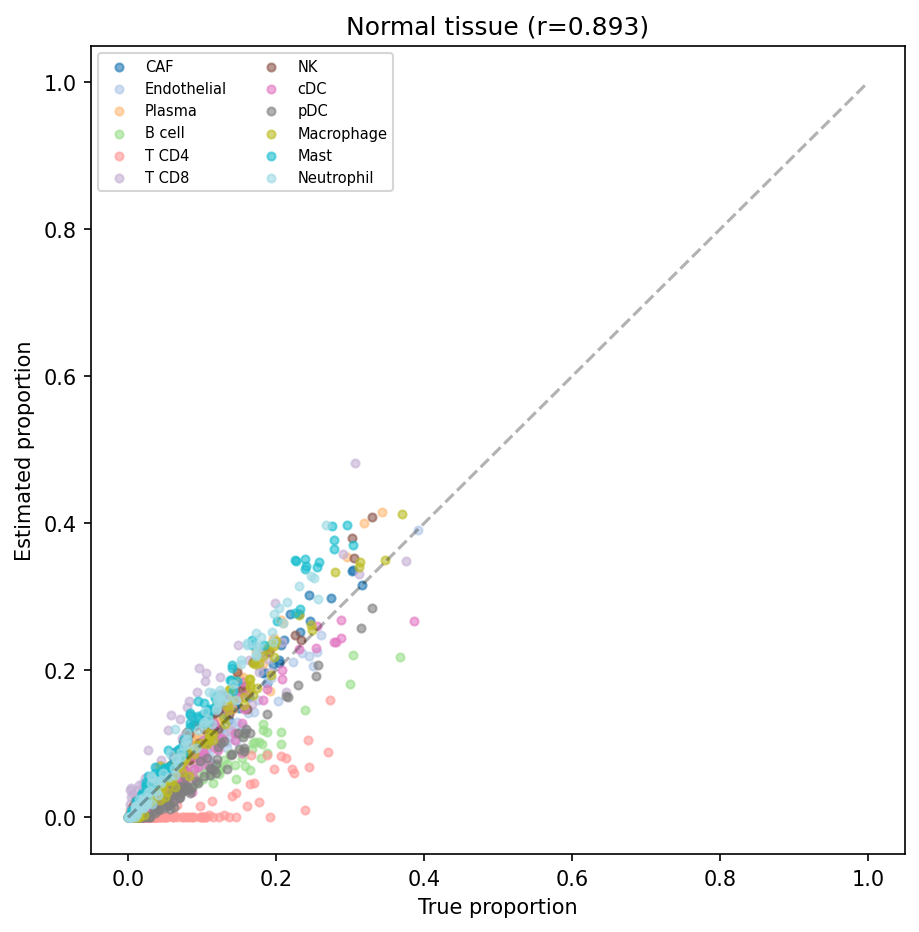
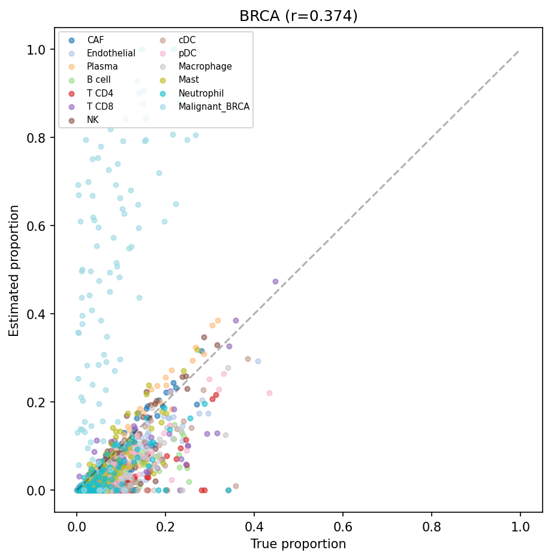
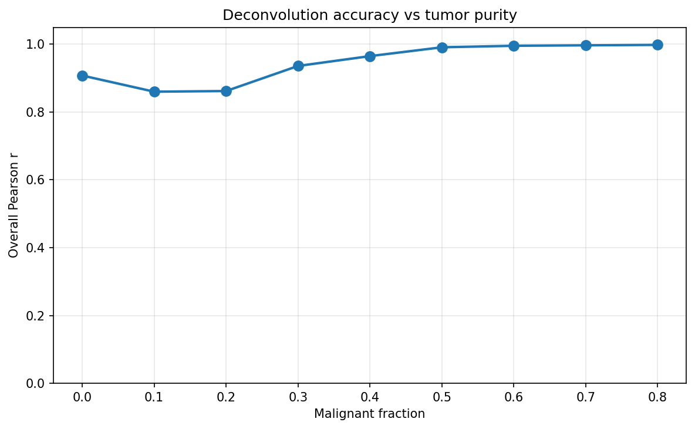
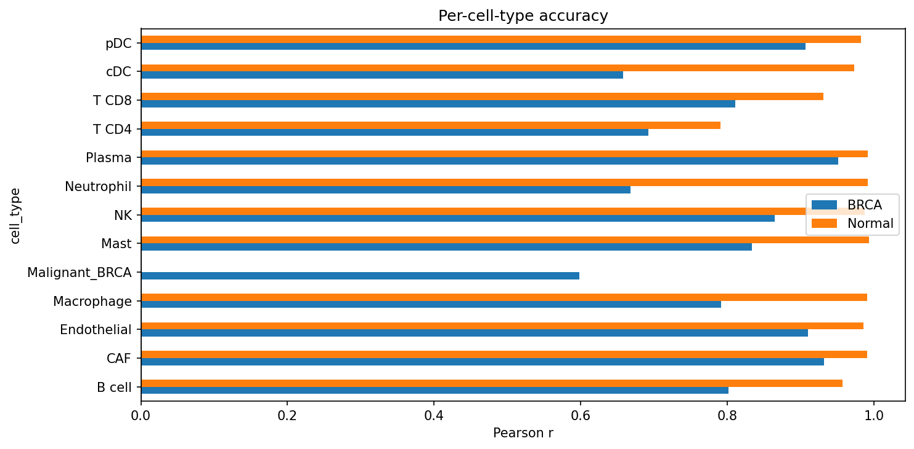
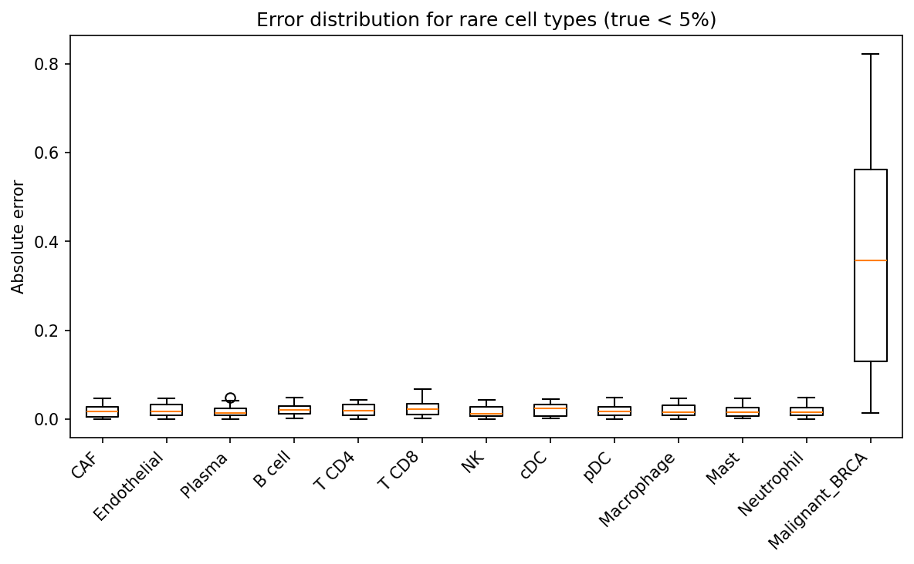

Bulk Deconvolution Benchmark
Tutorial 8 — Pseudobulk evaluation with known ground truth
Overview
This tutorial generates semi-synthetic scRNA-seq data, creates pseudobulk
mixtures with known cell-type proportions, runs spatial-gpu's
deconvolution_bulk(), and evaluates accuracy against ground truth.
Because ground-truth fractions are constructed by design, this framework
provides a rigorous, reproducible benchmark that does not depend on external
held-out datasets.
Three evaluation scenarios are covered:
- BRCA tumor tissue — 13 cell types including malignant, immune, and stromal populations characteristic of breast cancer.
- Normal tissue — 12 cell types without malignant cells, testing deconvolution in a non-tumor context.
- Malignant cell titration — systematic titration of malignant cell fraction from 0% to 80% to characterize sensitivity and linearity.
The tutorial also exports reference profiles and bulk count matrices for side-by-side comparison with external tools such as MuSiC and CIBERSORTx.
1. Generate scRNA-seq Reference Data
Semi-synthetic scRNA-seq profiles are generated from published gene expression signatures with added cell-type-specific noise. Each dataset contains a defined number of cells and genes, with cell types assigned in realistic proportions drawn from the literature.
import spatialgpu.deconvolution as spacet # Generate BRCA tumor reference (13 cell types) scrna_brca = spacet.generate_semi_synthetic_scrna( cancer_type="BRCA", n_cells=6500, n_genes=2000, random_state=42, ) # Generate normal tissue reference (12 cell types) scrna_normal = spacet.generate_semi_synthetic_scrna( cancer_type="Normal", n_cells=6000, n_genes=2000, random_state=42, ) print(scrna_brca) print(scrna_normal)
2. Generate Pseudobulk Mixtures
Pseudobulk samples are constructed by summing counts from cells sampled in known proportions, producing bulk-like expression profiles with exact ground-truth fractions. Two sampling strategies are used: random Dirichlet sampling for general benchmarking, and a targeted titration design for sensitivity analysis.
Dirichlet sampling (general benchmark)
# Generate 100 pseudobulk samples (Dirichlet-distributed proportions) bulk_brca, truth_brca = spacet.generate_pseudobulk( scrna_brca, n_samples=100, cells_per_sample=1000, alpha=1.0, # symmetric Dirichlet concentration random_state=42, ) bulk_normal, truth_normal = spacet.generate_pseudobulk( scrna_normal, n_samples=100, cells_per_sample=1000, alpha=1.0, random_state=42, ) print(bulk_brca.shape) # (100, 2000) — samples x genes print(truth_brca.shape) # (100, 13) — samples x cell types
Malignant cell titration
# Titration: vary Malignant_BRCA fraction from 0% to 80% bulk_titration, truth_titration = spacet.generate_pseudobulk_titration( scrna_brca, target_type="Malignant_BRCA", fractions=[0.0, 0.1, 0.2, 0.3, 0.4, 0.5, 0.6, 0.7, 0.8], n_replicates=5, cells_per_sample=1000, random_state=42, ) print(bulk_titration.shape) # (45, 2000) — 9 fractions x 5 replicates print(truth_titration.shape) # (45, 13)
3. Deconvolution
Run deconvolution_bulk() on each pseudobulk dataset. The function
accepts a bulk count matrix and a cancer type string, uses the corresponding
internal reference profile, and returns estimated cell-type fractions.
# Deconvolve BRCA pseudobulk pred_brca = spacet.deconvolution_bulk(bulk_brca, cancer_type="BRCA") # Deconvolve normal pseudobulk pred_normal = spacet.deconvolution_bulk(bulk_normal, cancer_type="Normal") # Deconvolve titration pseudobulk pred_titration = spacet.deconvolution_bulk(bulk_titration, cancer_type="BRCA") print(pred_brca.shape) # (100, 13) — predicted fractions print(pred_normal.shape) # (100, 12) print(pred_titration.shape) # (45, 13)
cancer_type argument controls which internal single-cell
reference signature matrix is used. Passing "Normal" uses a
non-malignant reference without a malignant cell type. The reference matrix
is automatically subset to genes present in the bulk input.
4. Evaluation
Deconvolution accuracy is assessed by comparing predicted fractions to ground-truth fractions across all samples and cell types. Four metrics are reported: overall Pearson r (linear correlation), overall Spearman rho (rank correlation), RMSE (root mean square error), and rare-type MAE (mean absolute error for cell types with mean true fraction < 5%).
from spatialgpu.benchmark import evaluate_deconvolution # Evaluate each scenario metrics_normal = evaluate_deconvolution(pred_normal, truth_normal, label="Normal") metrics_brca = evaluate_deconvolution(pred_brca, truth_brca, label="BRCA") metrics_titration = evaluate_deconvolution(pred_titration, truth_titration, label="Titration")
Normal tissue metrics
BRCA tumor metrics
Titration metrics
5. Benchmark Figures
The following figures summarize deconvolution accuracy across all three scenarios. Scatter plots compare predicted versus ground-truth fractions at the per-sample, per-cell-type level. Bar plots show per-cell-type Pearson r to identify which populations are easier or harder to recover.

Predicted vs ground truth (normal tissue, r=0.893). Each point represents one cell type in one pseudobulk sample. The dashed line indicates perfect prediction.

Predicted vs ground truth (BRCA tumor, r=0.374). Malignant and CAF populations show higher variance, driven by transcriptional similarity between cell types in the tumor microenvironment.

Malignant cell titration curve. Predicted malignant fraction (y-axis) plotted against ground-truth input fraction (x-axis) across 5 replicates per titration step. Shaded band shows ±1 SD across replicates.

Per-cell-type Pearson r across scenarios. Cell types are ordered by mean r across Normal and BRCA conditions. Immune effector cells (CD8 T, NK) achieve consistently high r; malignant and CAF populations show scenario-dependent variation.

Rare cell type detection accuracy. MAE is shown for cell types with mean ground-truth fraction below 5%. Lower MAE indicates more accurate recovery of low-abundance populations.
6. Export for External Tools
The pseudobulk count matrices and reference profiles can be exported in formats compatible with MuSiC (R) and CIBERSORTx (web), enabling direct comparison of deconvolution accuracy across methods on identical inputs.
from spatialgpu.benchmark import export_for_music, export_for_cibersortx # Export for MuSiC (R): writes bulk_counts.csv, sc_counts.csv, sc_metadata.csv export_for_music( bulk=bulk_brca, scrna=scrna_brca, out_dir="exports/music_brca", ) # Export for CIBERSORTx: writes mixture_file.txt and signature_matrix.txt export_for_cibersortx( bulk=bulk_brca, scrna=scrna_brca, out_dir="exports/cibersortx_brca", )
sc_counts). They
are generated locally but excluded from the GitHub repository. Add
exports/ to your .gitignore before committing.
Session Info
import spatialgpu print(f"spatial-gpu version: {spatialgpu.__version__}") import anndata, numpy, scipy, pandas, matplotlib print(f"anndata: {anndata.__version__}") print(f"numpy: {numpy.__version__}") print(f"scipy: {scipy.__version__}") print(f"pandas: {pandas.__version__}") print(f"matplotlib: {matplotlib.__version__}") try: import cupy print(f"cupy: {cupy.__version__} (GPU backend available)") except ImportError: print("cupy: not installed (CPU-only mode)")